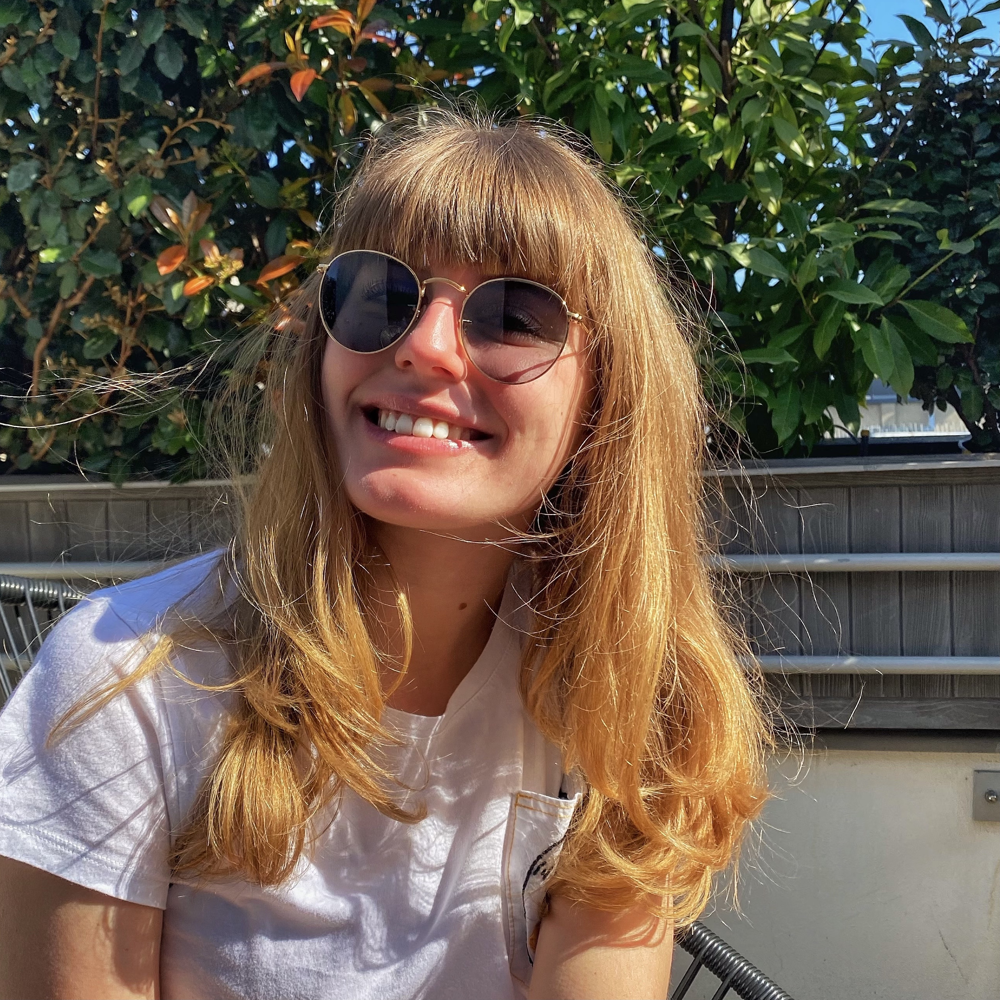

Nice to meet you,
I'm Clémentine ! 🌻

As a first year student at the ESSEC GBBA, I am learning more about coding and developing my own webstie thanks to LeWagon👩🏼💻
On this website, I gathered the main points of my student life ! 👩🏼🎓
ESSEC 🎓
I joint in September 2020 the ESSEC Global Bachelor of Business Administration. I chose to start my cursus in the French Track at the Cergy campus.
Since the beginning of my studies, I have discovered different classes very different from those taught in high school. More particularly, I acquired new knowledge in accounting, marketing and statistics.
Travel ✈️
Since my childhood, I have always liked to discover the world. I have had the chance to travel a lot, whether with my friends or my family. 🌍
I also lived abroad for three years. With my family, we were expatriated in Sweden, to Stockholm. This experience allowed me to open up to new cultures, and also to develop my adaptability. 🇸🇪
Volunteering 🤝
During the final year, with my music group, we took the initiative to organize a charity concert. We therefore discovered the steps leading to the organization of a show, and we had chosen the charity "Les Petits Princes"to donate our profits to ⭐
In addition, for three years, I have been volunteering at "La cène du Jeudi", a charity of distribution of meals and timeshare with people in difficult or precarious situations.
Cooking 🍳
I have always loved cooking for my family and friends. I like to spend hours in the kitchen and try new recipes. I also like to try out new restaurants. Here, you will find the address of my favorite restaurant in Paris.